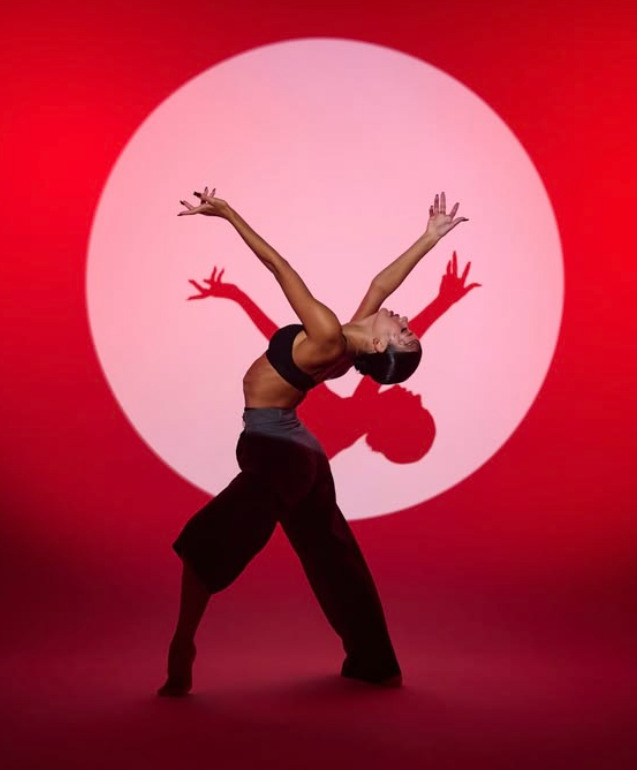
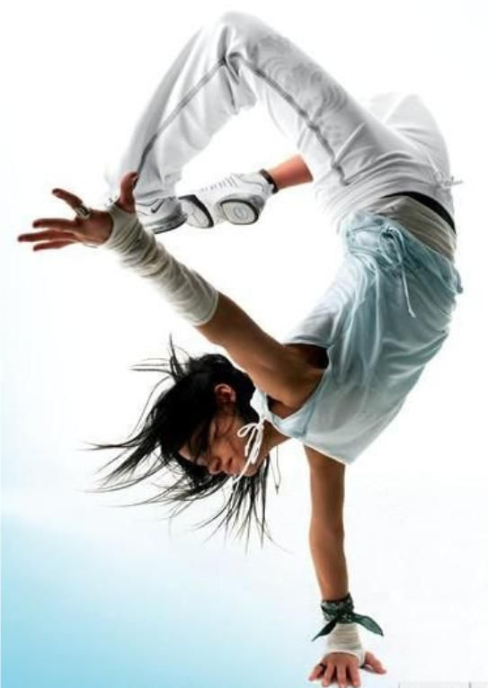
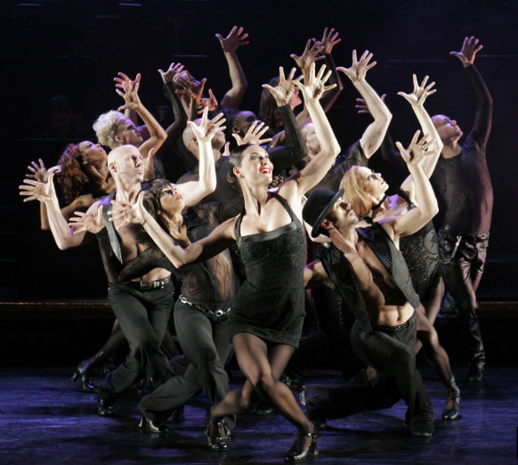
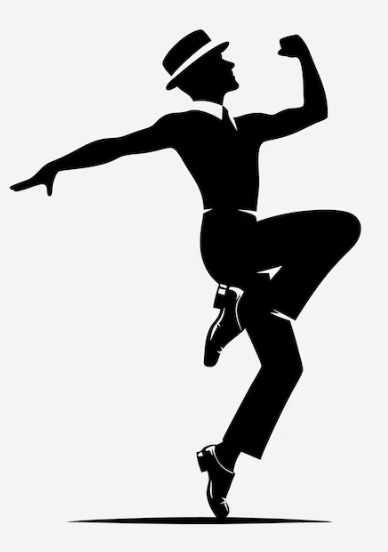

Dancing through Life
Ballet

Ballet is een klassieke dansvorm die zijn oorsprong vindt in de
Italiaanse en Franse hoven van de 15e en 16e eeuw. De stijl kenmerkt
zich door strakke techniek, uitgelijnde lichaamshouding en precieze
bewegingen — denk aan pirouettes, arabesques en het werken op pointe
(de tenen). Alles draait om controle, kracht en elegantie, opgebouwd
via jarenlange training. Waar contemporary dans juist ruimte geeft aan
improvisatie en persoonlijke interpretatie, is ballet gebaseerd op een
vaste vocabulaire van bewegingen die eeuwenlang is doorgegeven en
verfijnd. Die discipline en techniek vormen voor veel dansers, ook
binnen andere stijlen, de fundering waarop ze verder bouwen.
Modern Contemporary

Contemporary dans is een vrije, expressieve dansstijl die elementen
combineert uit onder andere modern, jazz, ballet en improvisatie. Waar
klassiek ballet vaak strakke technieken en vaste vormen kent, draait
contemporary juist om beweging vanuit emotie en verhaal. Denk aan
vloeiende overgangen, het spelen met zwaartekracht, grondwerk en een
sterke connectie tussen adem en beweging. Wat deze stijl voor mij zo
bijzonder maakt, is de ruimte voor persoonlijke interpretatie. Er is
niet één "juiste" manier om een beweging uit te voeren, het gaat om
wat je voelt en wilt overbrengen. Die combinatie van techniek en
vrijheid maakt contemporary dans niet alleen fysiek uitdagend, maar
ook een krachtige manier om jezelf te uiten.
Hip Hop

Hiphop dans ontstond in de jaren '70 in de straten van New York, als
onderdeel van de bredere hiphopcultuur naast rap, graffiti en DJ-en.
De stijl is energiek, ritmisch en sterk verbonden met muziek — vaak
beats-gedreven met scherpe, geïsoleerde bewegingen. Binnen hiphop
vallen ook substijlen zoals breaking, popping, locking en freestyle,
elk met hun eigen kenmerken en oorsprong. Wat hiphop onderscheidt van
stijlen als ballet en contemporary, is de nadruk op authenticiteit en
persoonlijke stijl. Er is geen vaste choreografie die je exact moet
nabootsen — het gaat om hoe jij de muziek voelt en vertaalt naar
beweging. Die vrijheid, gecombineerd met de rauwe energie van de
stijl, maakt hiphop een dansvorm die voortdurend blijft evolueren.
Show Jazz

Showjazz is een theatrale en energieke dansstijl die jazzdans
combineert met entertainment. De stijl is ontstaan uit de jazzdans van
de 20e eeuw en kreeg vorm op podia als Broadway, in musicals en in
revues. Denk aan krachtige sprongen, scherpe isolaties, snelle
voetenwerk en veel expressie in gezicht en houding. Wat showjazz
onderscheidt van stijlen als ballet en contemporary, is de nadruk op
performance en publiek. Het gaat niet alleen om techniek, maar ook om
uitstraling, ritme en het vertellen van een verhaal met karakter. Een
goede showjazzdanser trekt de aandacht van de zaal en laat elke
beweging groots en strak overkomen.
Tapdans

Tapdans is een ritmische dansvorm waarbij de danser met speciale
schoenen met metalen plaatjes onder de neus en de hak geluid maakt op
de vloer. Je bent dus niet alleen danser, maar ook percussionist: de
voeten zijn het instrument. De stijl ontstond in de Verenigde Staten
in de 19e eeuw, uit een mix van Afrikaanse ritmes en Ierse en Engelse
klompendansen, en groeide uit tot een vaste waarde in musicals, films
en theatershows. Wat tapdans onderscheidt van stijlen als ballet,
contemporary, hiphop en showjazz, is dat de muziek letterlijk door de
danser zelf wordt gemaakt. Timing, precisie en gevoel voor ritme staan
centraal, en een goede tapdanser speelt met geluid, tempo en stilte.
Dat maakt het een dansvorm die net zo goed te horen is als te zien.